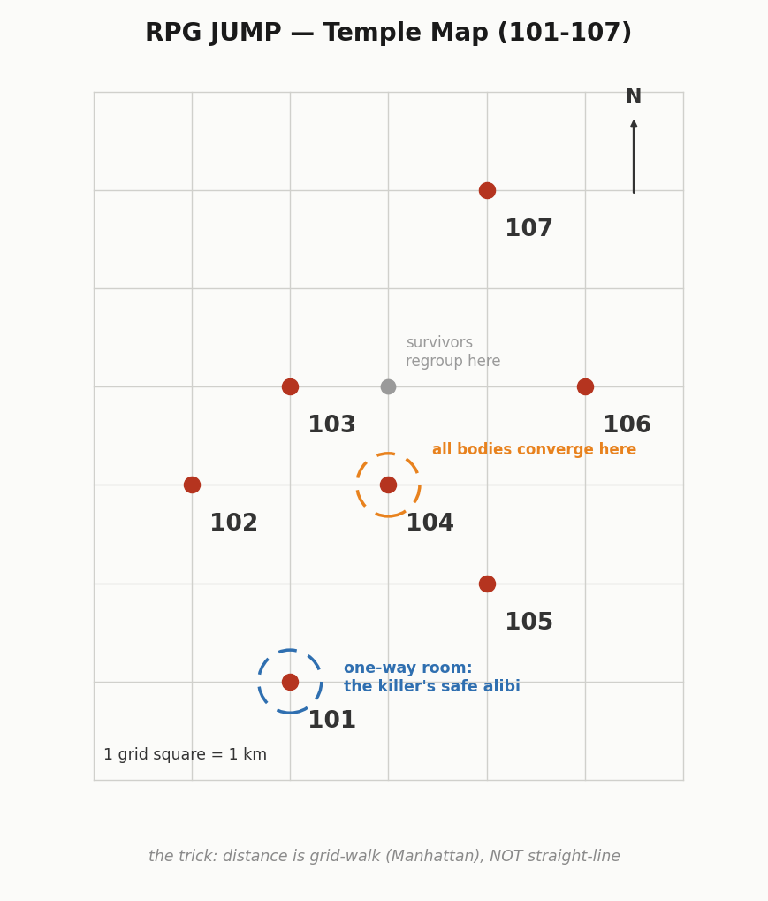

Same clue, opposite reading
Seven temples on a grid map. Every 50 minutes a teleport spell yanks every player to the nearest other temple — corpses included. The whole puzzle hinges on one quietly devastating question: what does “nearest” mean? Both models seized on the same calibration clue. Both then named the same killer. One had truly solved it; the other had reasoned beautifully over a map of which-temple-connects-to-which that was simply wrong.
Reveal the analysis — spoils Case 07

The case hands you a calibration clue: from temple 106, the next jump is equally likely to land on 104, 105, or 107.
Opus read the world as Euclidean and literally annotated its own model “verified correct.” Fable read it as Manhattan distance — the actual trick the author buried (the puzzle is named RPG JUMP for a reason). Both then named the same killer. But Opus arrived there over a wrong connectivity map; Fable correctly worked out the one-way temple that can hide a killer and two victims with no witnesses.